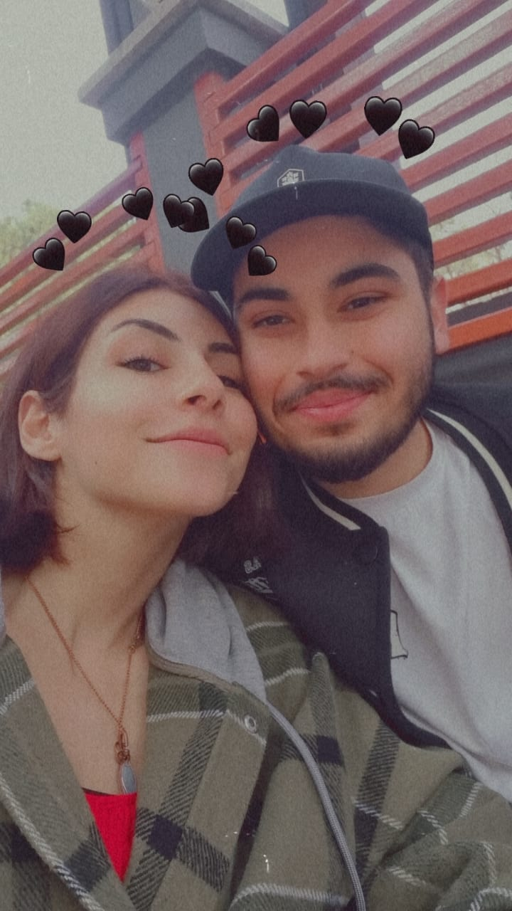

Hakan & Elif
Bir Ömür Boyu Sürecek Aşk Hikayemiz
❤️
Birlikte yazdığımız bu güzel hikayenin sayfalarını çevirin...
Bir Ömür Boyu Sürecek Aşk Hikayemiz
Aradan neredeyse 1,5 sene geçmiş korona bitmiş ve okula döneceğim günü heyecanla beklemeye başlamıştım. Ne derler bilirsin sayılı gün çabuk geçermiş. 6 Ekim 2021 sonunda büyük gün gelmişti okuluma , evime dönecektim. Tabi daha o zamanlar hikayenin yeni başladığından haberim bile yoktu. Geldiğimin ilk akşamında arkadaşlarım bir kızdan bahsediyorlardı daha o gün onun hakkında anlatılanlar görmeden bile dikkatimi çekmeyi başarmıştı bu kız.
Ertesi günü hep yaptığımız gibi Kalkanlıya çıktığımızda ilk defa orda tanıştık seninle tabi pek tanışma diyemezdim ben ona sadece aynı yerde bulunmuştuk ama bir yerden başlamakta hiç fena değildi.
Ertesi gün tekrar köye çıktık bu sefer işler normalden biraz farklı ilerledi. Hatay'dan alışkanlık şargoz çok severim şans işte tamda yanımda şargoz planı yapıyorlardı. Böyle şeyleri asla kaçırmam hemen bende dahil oldum hatta bir de küçük bir iddia koyduk sarhoş olan kaybeder diye tabi bunlar biraz işin bahanesiydi.Zaman öyle geçiyordu ki sabah olana kadar sohbet etmeye devam ettik hatta süre hala yetmemiş olacak ki planı ertesi günü tekrarlamaya sözleştik.
Tarihler 10 Ekim olunca tamam biraz alkol ve sarhoşluğuma denk gelmiş olabilir ama asıl sebebi kendimi rahat hissetmemden kendimi açmaya başladım. Gene bir ayın 10 u sanırım bizim olayımız 10'lar. O günle beraber aslında arkadaşlarımızla oturduktan sonra bir de 2. yurt kantininde saatlerce sohbet etmeye başlamıştık.
O dönem tabi kızın bazı tabuları vardı. Normalde kendim için sorun çözen ben uzun süredir ilk defa birinin yanında olmak istemiştim. Ona bir yıldız seçtik yıldızların altında saatlerce oturduk. O gün ilk defa yaslandı bana tabi ucube arkadaşlarımız olmasa daha önce de olurdu neyse konu bu değil. O günden sonra bana güvenmeye başlamıştı hem de inatla bana güvenme derken.
Tabi bizimkiler durur mu hemen sorular başladı siz ne iş yok ne alaka falan filan asla rahat vermiyorlar sürekli darlıyorlardı.Hatta kızın arkadaşları da başlayınca bu işe 1-2 nereyse her gün sorguda gibiydik.
Her zamanki gibi vakit geçirecektik ama o gün biraz farklıydı çünkü ben kısa bir süre sonra Hatay'a ailemin yanına dönecektim. Ertesi gününe bir doğum gününe gidecektik ama biz gene oturup içmeyi ve sohbet etmeyi seçmiştik aslında o güne kadar içten içe hep farkındaydık aramızda bir şeylerin döndüğünü ama belki itiraf etmek istemiyorduk belki de büyüsünü bozup her şeyi mahvetmekten korkuyorduk.
Yanlış yollara sapmamız bile eğlenceliydi çünkü birlikteydik. O günlerden kalan fotoğraflara her baktığımda gülümsüyorum.
Elbette zor zamanlarımız da oldu. Ama her zorluk bizi birbirimize daha çok bağladı. Birlikte aştığımız her engel, aşkımızı güçlendirdi.
Senin desteğin olmasaydı belki pes ederdim. Ama sen hep yanımda oldun, güç verdin...
Doğum günlerimiz, yıl dönümlerimiz, sürprizlerimiz... Her biri ayrı birer hazine benim için.
Senin için hazırladığım o küçük sürprizi hatırlıyor musun? Yüzündeki o mutluluk ifadesini asla unutmayacağım.
Mutluluk dolu anlarımız ❤️
(Videoyu ortalayamadım üstüne basınca büyüyor :/)
Birlikte kurduğumuz hayaller... Evimiz, belki çocuklarımız, birlikte görmek istediğimiz yerler.
Seninle birlikte geleceği düşünmek bile beni heyecanlandırıyor. Biliyorum ki hayallerimiz gerçek olacak.
Bu hikaye bitmeyecek, her gün yeni sayfalar ekleyeceğiz. Seninle olan yolculuğumuz devam edecek.